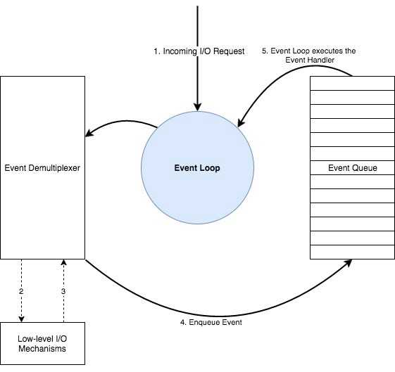
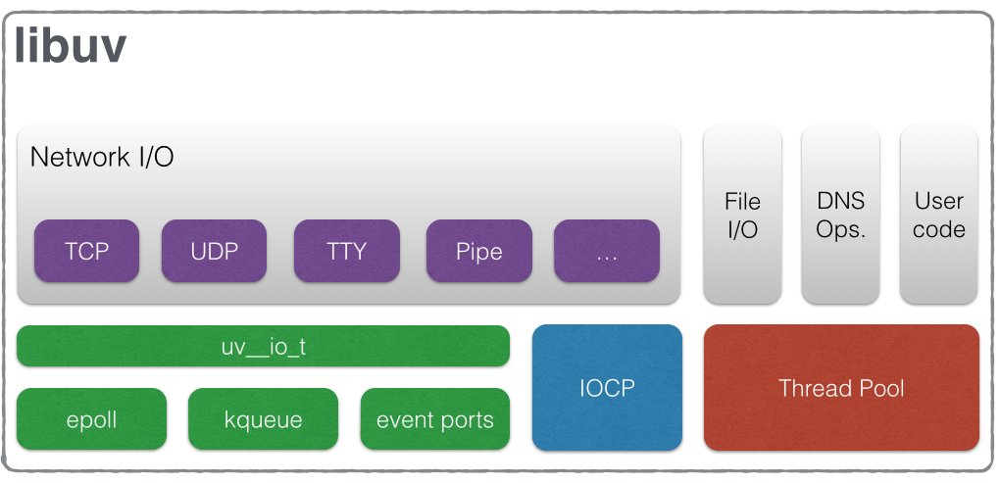
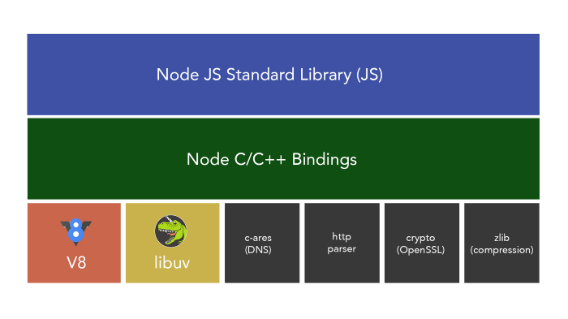

（译文）NodeJS 事件循环（一）- 事件循环机制概述
原文地址：Event Loop and the Big Picture — NodeJS Event Loop Part 1, Deepal Jayasekara, Apr 23, 2017
处理 I/O 的不同方式使得 Node.js 区别于其他的编程平台。我们常常听到别人在介绍 Node.js 时说 “一个基于 google v8 JavaScript 引擎的非阻塞，事件驱动的平台”。这句话究竟意味着什么？“非阻塞”和“事件驱动”是什么意思？所有这些问题的答案涉及到 NodeJs 的核心，事件循环。在这个系列中，我会阐释什么是事件循环，它是如何工作的，它如何影响我们的应用，如何有效使用等等。在这篇文章中，我将讲解 NodeJs 如何工作，如何访问 I/O，如何跨平台工作等等。
反应器模式 （Reactor Pattern）
NodeJS 在一个事件驱动的模型中工作，其中涉及到一个事件多路分用器（Event Demultiplexer） 和一个事件队列（Event Queue）。所有的 I/O 请求最终会生成一个或成功或失败或其他触发器的事件（Event）。事件通过下面的算法进行处理。
- 事件多路分用器接受 I/O 请求并将这些请求委托给对应的硬件。
- 当 I/O 请求被处理时（例如：一个文件里的数据可以被读取，一个 socket 的数据可以被读取等），事件多路分用器将该特定动作的回调处理器添加到一个待处理的队列中。这些回调被称为事件，事件添加的队列被称为事件队列。
- 当事件队列中存在待处理的事件时，它们会按入队的顺序依次执行，直到队列为空。
- 如果事件队列中没有待处理的事件或者事件多路分用器没有挂起的请求，程序会结束。否则，又会从第一步重新开始。
协调整个机制的程序被称为事件循环（Event Loop）。

事件循环是单线程和半无限的循环。因为它在没有更多的工作要做时会在一些点退出，这就是为什么称为半无限循环的原因。在开发者的视角，这就是程序退出的地方。
注意: 不要将事件循环和 NodeJs 的 EventEmitter 混淆。EventEmitter 跟事件循环相比完全是另一个不同的概念。
上面的图解是 NodeJs 如何工作的一个高层次概述，展示了反应器模式的主要组件。但是实际情况比这个要复杂的多，到底有多复杂？
事件多路分发器不是在所有系统平台上处理所有 I/O 的单一组件。
事件队列并不像图中展示的那样是一个所有事件都入队和出队的单独队列。并且 I/O 不是唯一入队的事件类型。
因此，让我们更深入些。
事件多路分发器 (Event Demultiplexer)
事件多路分发器不是一个在真实世界中存在的组件，而是反应器模式中的一个抽象概念。现实世界中，事件多路分发器在不同的系统中有不同的实现。比如在 Linux 中的 epoll ，BSD（MacOS）系统中的 kqueue ，Solaris 中的 event ports ，windows 中的 IOCP（Input Output Completion Port）等等。NodeJS 利用这些实现提供的底层，非阻塞异步的硬件 I/O 能力。
文件 I/O 的复杂性
但令人烦心的是，并不是所有类型的 I/O 都可以使用这些实现执行。即使在同一操作系统平台，对不同类型的 I/O 的支持也十分复杂。典型的例子，网络 I/O 使用 epoll，kqueu，events ports 和 IOCP 可以以非阻塞的方式执行。但是文件 I/O 则不一定。特定的系统，如 Linux 不支持完全的异步访问文件系统。并且在 MacOS 系统上 kquue 的文件系统事件通知和信号有很多限制(更多相关介绍)。情况复杂到以至于几乎不可能同时处理所有文件系统的复杂度来提供完整的异步功能。
DNS 的复杂性
与文件 I/O 相似，Node API 提供的 DNS 函数也有一定的复杂性。因为 NodeJS DNS 函数如 dns.lookup，会访问系统配置文件如 nsswitch.conf，resolve.conf 和 /etc/hosts，之前提到的文件系统的复杂性也适用于 dns.lookup 函数。
解决办法？
因此，引入了一个线程池来提供不能被硬件异步 I/O 工具（epoll/kqueue/event ports/IOCP）直接支持的 I/O 功能。现在我们知道并不是所有的 I/O 功能发生在线程池。NodeJS 尽最大的努力使用非阻塞和异步硬件 I/O 来处理大部分的 I/O 工作，但是对于那些阻塞或者处理起来很复杂的 I/O，则使用线程池。
但是 I/O 不是线程池唯一处理的任务。Node.js 的部分
crypto功能如crypto.pbkdf2，异步版本的crypto.randomBytes，crypto.randomFill，异步版本的zlib也运行在 libuv 的线程池。因为它们属于 CPU 密集型工作，在线程池工作能够避免阻塞事件循环。
把他们拼在一起
正如我们看到的，实际世界中，在所有不同操作系统平台支持所有不同类型的 I/O（文件 I/O，网络 I/O，DNS 等）非常困难。一部分 I/O 可以使用原生硬件实现执行，同时保留完整的异步，另外一部分类型的 I/O 则需要在线程池中执行以保证异步特性。
Node 开发者中，一个普遍的误解是 Node 在线程池中处理所有的 I/O。
为了管理整个过程同时支持跨平台的 I/O，应该有一个抽象层封装了平台间和平台内的复杂度，并且为 Node 提供上层通用 API。
那么是谁呢？女士们，先生们，有请 libuv
official libuv docs
libuv is cross-platform support library which was originally written for NodeJS. It’s designed around the event-driven asynchronous I/O model.
The library provides much more than a simple abstraction over different I/O polling mechanisms: ‘handles’ and ‘streams’ provide a high level abstraction for sockets and other entities; cross-platform file I/O and threading functionality is also provided, amongst other things.
让我们看下 libuv 的组成。下面的图表来自于官方文档，描述了暴露出的通用 API 处理了哪些不同类型的 I/O。

现在我们知道事件多路分发器，不是一个原子的实体，而是一个被 Libuv 抽象出的处理 I/O 过程的 APIs 集合，暴露给 NodeJS 的上层使用。libuv 除了提供事件多路分发器给 Node，它还为 NodeJS 提供了完整的事件循环功能，包含事件队列机制。
现在让我们看下事件队列。
事件队列
事件队列按理说是一个所有事件入队，然后事件循环按顺序处理，直到队列为空的数据结构。但是在 Node 中实际发生的和反应器模式描述的完全不同。所以差异在哪？
NodeJS 中不止一个队列，不同类型的事件会在它们自己的队列中入队。
在处理完一个阶段后，移向下一个阶段之前，事件循环将会处理两个中间队列，直到两个中间队列为空。
那么总共有多少个队列呢？中间队列又是什么？
有 4 个主要类型的队列，被原生的 libuv 事件循环处理。
- Expired timers and intervals Queue— 使用 setTimeout 添加的过期计时器的回调或者使用 setInterval 添加的间隔函数。
- IO Events Queue— 完成的 I/O 事件
- Immediate queue- 使用 setImmediate 函数添加的回调
- Close Handlers Queue- 任何一个 close 事件处理器。
注意，尽管我在这里为方便说 “队列”，但它们中的一些实际上有不同类型的数据结构（timers 被存储在最小堆里）
除了四个主要的队列，这里另外有两个我之前提到的 “中间队列”，它们被 Node 处理。这些队列不是 libuv 的一部分，而是 NodeJS 的一部分。它们分别是：
- Next Ticks Queue - 使用 process.nextTick() 函数添加的回调
- other Microtasks Queue - 包含其他微任务如成功的 Promise 回调
它是如何工作的？
正如你在下面图表中所见，Node 开始事件循环先检查 timers 队列中是否有任何过期的 timers，然后在每个步骤中处理每个队列，同时保持对所有待处理对象的引用计数器。处理完 close handlers 队列，如果在所有的队列中没有要处理的项，而且也没有挂起的操作，那么循环将会退出。在事件循环中每个队列的处理过程可以看做事件循环的一个阶段。

有趣的是被描绘成红色的中间队列，只要一个阶段结束，事件循环将会检查这两个中间阶段是否有要处理的项。如果有，事件循环会立马开始处理它们直到两个队列为空。一旦为空，事件循环就移到下一个阶段。
E.g, 事件循环当前处理有着 5 个事件处理器的 immediate queue。同时，两个处理器回调被添加到 next tick queue。一旦事件处理器完成 immediate queue 中的 5 个事件处理器，事件循环将会在移到 close handlers 队列之前检测到 next tick queue 里面有两个要处理的项。然后事件处理器会处理完 next tick queue 里面的处理器。然后移到 close handlers 队列。
Next tick queue vs Other Microtasks
next tick queue 比 other micotasks 有着更高的优先级。当在一个阶段的结尾时 libuv 传递控制权给 Node 的高层，这时这两个队列都在事件循环的两个阶段之间被处理。你应该注意到我用暗红色来表示 next tick queue，这意味着在开始处理 promise 的微队列之前，next tick queue 是空的。
next tick queue 的优先级比 promise 的高仅仅适合于 V8 提供的原生 JS 提供的 promise。如果你使用一个 q 库或者 bluebird, 你将会观察到一个不同的结果，因为它们早于原生的 promise，有不同的语义。q 和 bluebird 处理 promise 也有不同的方式，后面的文章我会解释。
这些所谓的中间队列引入了一个新的问题，IO 饿死。广泛的使用 process.nextTick 填充 next tick queue 将会强迫事件循环处理 next tick queue 而不前进。这将会导致 IO 饿死，因为 next tick queue 未被清空前事件循环不能继续。
为了防止这种清空，这里有一个 next tick queue 的最大限制，可以使用
procsess.maxTickDepth参数设置，但是已经从 NodeJS v0.12 移除了。具体查看原因。
我将会在之后的文章中用示例深入讨论这些队列。
最后，你知道了什么是事件循环，如何实现的和 Node 处理异步 I/O。让我们看下 Libuv 在 NodeJS 架构中的位置。
